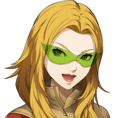

ノゾミ
シェーシャの力の感知ポイントが この先で分かれるのね。
グラデンス
東に見える廃都市と この山を越えた先にある神殿。
グラデンス
その２カ所から異界の力は感知されておる。
カル
二手に分かれるってことか。 で、組み分けはどうするんだ？
グラデンス
シェーシャについて知っている アサヒちゃんとノゾミちゃんには
グラデンス
別々の道を進んでほしいのじゃが、 良いかの？
ノゾミ
アサヒちゃんと分かれるのは少し不安だけど 今はその策が良さそうね。
ノゾミ
それに、グラデンスさんたちは 信用できそうだしね。
グラデンス
フォッフォッフォッ、 嬉しいことを言ってくれるの。
アサヒ
あたしはカルくん、セリアさんと 一緒がいいです！
アサヒ
あたし、２人ともっと話してみたいなって 思って……。
アサヒ
なんか２人とも神とか悪魔とか 関係無い感じじゃないですか。
セリア
でも、できればこの山は登りたくないから 廃都市に進みたいかも。
カル
俺も別に構わないが、 そうなるとノゾミさんが……。
ノゾミ
私は山登りは苦ではないから 問題無いわよ。
ノゾミ
それに、グラデンスさんとも 少し話してみたかったし。
カル
ハハッ、これ以上この話をすると 爺さんが面倒になるから止めるとして
カル
アサヒさんとノゾミさん、 どっちと一緒に進むんだ？
ノゾミ
神を倒す力を持つ召喚師か。 興味はあるかな。


ノゾミ
神を倒してきたあなたと
ノゾミ
神との共存について もう少し話してみたいわね。
アサヒ
神を倒すっていうことが どういうことなのか
アサヒ
Shou-chanに 直接聞いてみたいかも。
グラデンス
フォッフォッフォッ、 随分と人気なようじゃな。
グラデンス
神との共存について ノゾミちゃんと話すのと
グラデンス
神との戦いについて アサヒちゃんと話すこと